Dans le monde de l’informatique, tout fonctionne à base de ticket
Cela va permettre de solliciter la DSI
Un ticket passera par plusieurs statuts : cycle de vie du ticket
Peut-être de type incident ou demande
Doit compter un minimum d’informations
De nombreux avantages
Traçabilité Détection des
Répartition des
tâches Communication
problèmes
Utilisation d’un outil de gestion de ticket
L’assistance sous GLPI
Système de gestion de tickets / outil de ticketing
Conforme aux bonnes pratiques ITIL
Recueil des sollicitations utilisateur pour une gestion centralisée
Différents canaux de communication possibles
Saisie, suivi et traitement du ticket
Cycle de vie des tickets
Statistiques possibles
Page 3
Flux d’entrée
Trois grandes façons de créer un ticket
Interface d’ouverture de tickets anonymes
Interface simplifiée
Interface standard Depuis GLPI
Envoi d’un mail dans une boîte mail support
Configuration d’un collecteur Mail
Création du ticket par téléphone
Utilisation de l’interface standard par le technicien Téléphone
Cycle de vie d’un ticket
Ni groupes et utilisateurs sur le ticket Nouveau
En attente d’éléments => Modification manuelle En attente
Au moins un utilisateur/groupe est attribué En cours attribué
Une tâche vient d’être planifiée En cours planifié
Une solution vient d’être apportée au ticket Résolu
La solution est approuvée par le demandeur Clos
Page 4
Traitement d’un ticket : aperçu
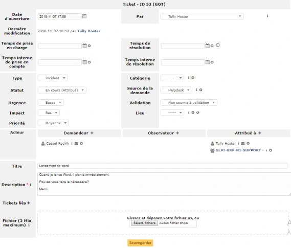
Interface GLPI présentée dans le support — illustration isolée du support, page 4.
Traitement d’un ticket : attribution
Utilisateurs, groupes ou fournisseurs
Représente les techniciens ou groupes de compétence en charge du ticket
Utilisé lors des escalades fonctionnelles
Raccourci pour s’attribuer nominativement le ticket
Peut être automatisé en fonction de critères à la création du ticket
Ticket visible pour traitement par les groupes et utilisateurs attribués
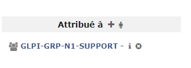
Interface GLPI présentée dans le support — illustration isolée du support, page 4.
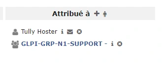
Interface GLPI présentée dans le support — illustration isolée du support, page 4.
Attribution
Page 5
Traitement d’un ticket : observateurs
Utilisé lors des escalades hiérarchiques
Utilisateurs et groupes
Notifications sans traitement possible du ticket
Va permettre de suivre l’évolution d’un ticket
Peuvent être ajoutés automatiquement à la création en fonction de critères
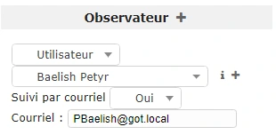
Interface GLPI présentée dans le support — illustration isolée du support, page 5.Interface GLPI présentée dans le support — illustration isolée du support, page 5.
Ajout
Traitement d’un ticket : SLA
Doivent être facilement identifiables
Le type : temps de résolution
La durée maximum de résolution souhaitée
Possibilité de créer des niveaux d’escalade
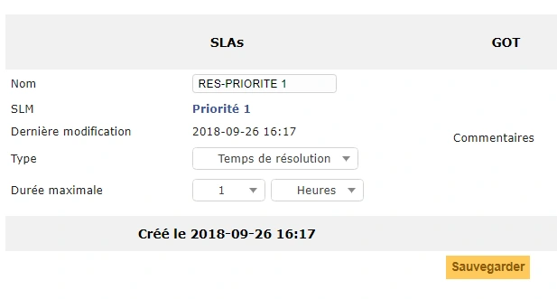
Interface GLPI présentée dans le support — illustration isolée du support, page 5.
Dépasser la date butoir de résolution n’est pas bloquant, juste informatif
Page 6
Traitement d’un ticket : validation
Un ticket peut nécessiter une validation hiérarchique
Manuelle ou automatique à la création
Non bloquant pour le traitement du ticket
Droits spécifiques pour pouvoir être « valideur »
Demandes multiples possibles
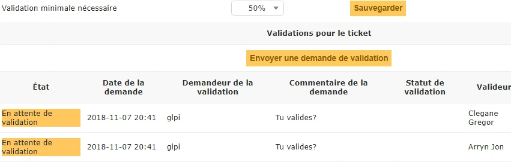
Interface GLPI présentée dans le support — illustration isolée du support, page 6.
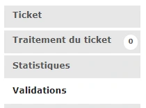
Interface GLPI présentée dans le support — illustration isolée du support, page 6.
Traitement d’un ticket : validation
Les valideurs reçoivent une notification de validation
Ils approuvent ou refusent en accédant au ticket à valider. Comment ?
Interface GLPI présentée dans le support — illustration isolée du support, page 6.
Liste de ses tickets à valider
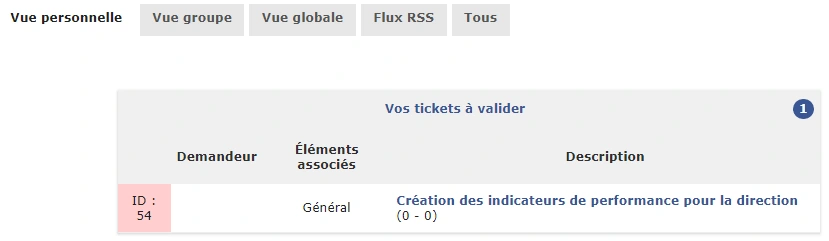
Interface GLPI présentée dans le support — illustration isolée du support, page 6.
Depuis notre vue personnelle
Page 7
Traitement d’un ticket : validation
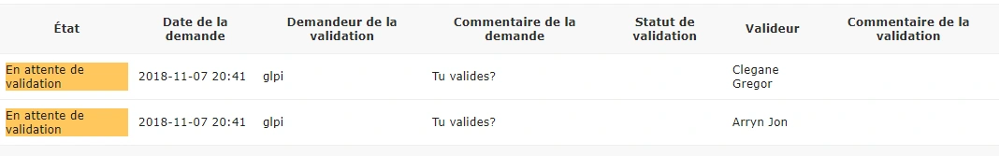
Interface GLPI présentée dans le support — illustration isolée du support, page 7.
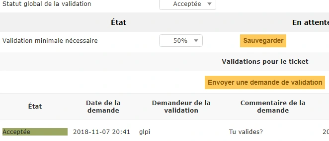
Interface GLPI présentée dans le support — illustration isolée du support, page 7.
Traitement d’un ticket : traitement
Onglet Traitement du ticket
Quatre possibilités
Suivi
Tâche
Solution
Document
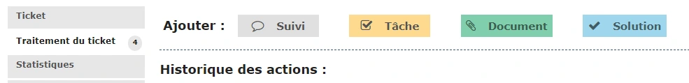
Interface GLPI présentée dans le support — illustration isolée du support, page 7.
Page 8
Traitement d’un ticket : clôture
La clôture du ticket s’effectue à l’approbation de la solution
Peut être effectuée par le demandeur ou le rédacteur (ticket par téléphone)
Accessible par le mail de validation ou le menu ticket de l’interface simplifiée
Commentaire obligatoire en cas de refus
Possibilité de planifier ou rendre la clôture immédiate à la résolution
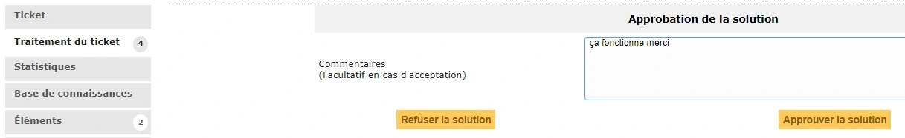
Interface GLPI présentée dans le support — illustration isolée du support, page 8.
Ticket : éléments liés
Liaison de CI possible à la création d’un ticket
Utile pour le diagnostic
Utile pour les statistiques
Nécessite une CMDB à jour et bien renseignée
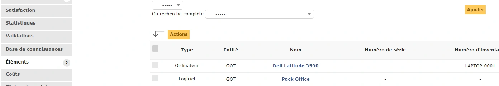
Interface GLPI présentée dans le support — illustration isolée du support, page 8.
Page 9
Base de connaissances : article
Objectifs
Centraliser des connaissances internes aux différents techniciens
Mettre à disposition des utilisateurs des informations (FAQ)
Accessible depuis Outils => Base de connaissances
Restriction à un nombre d’acteurs
Validation de publications d’articles
Gestion des révisions
Liaisons possibles avec les tickets et les éléments d’inventaire (CI)
FAQ : sous-partie de la base de connaissances à destination des utilisateurs
Organisation possible par catégories et restrictions temporelles
Base de connaissances : création
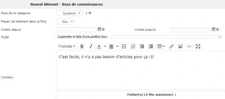
Interface GLPI présentée dans le support — illustration isolée du support, page 9.
Création d’un article
Ajout des cibles
Usage public ou non
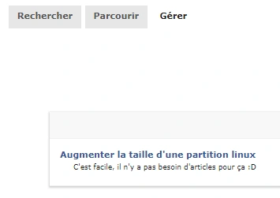
Interface GLPI présentée dans le support — illustration isolée du support, page 9.
Article sans cible = Article non publié
Apparaît dans Gérer
Visible que par son créateur
Page 10
Base de connaissances : cibles
Vont permettre de publier l’article à différentes personnes
Entité – Profil – Groupe - Utilisateur
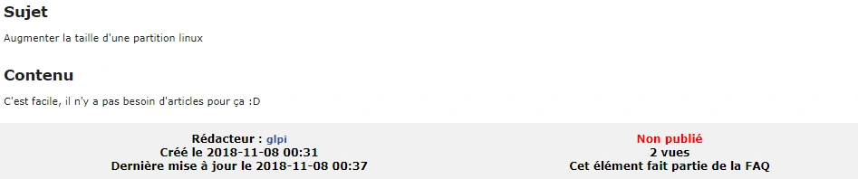
Interface GLPI présentée dans le support — illustration isolée du support, page 10.
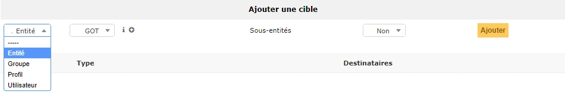
Interface GLPI présentée dans le support — illustration isolée du support, page 10.
Base de connaissances publiques
Éviter la création systématique d’un ticket
FAQ (Foire Aux Questions)
Accessible depuis l’interface simplifiée
Accès rapide ou par catégories
Interface GLPI présentée dans le support — illustration isolée du support, page 10.